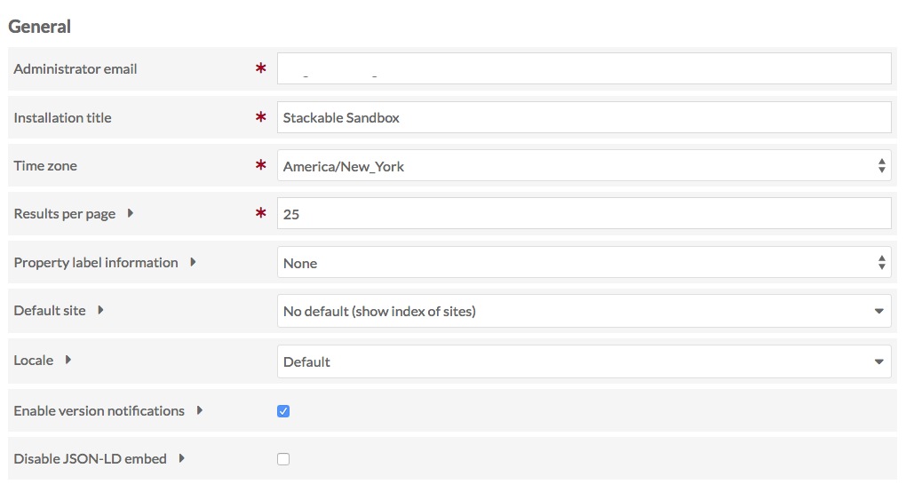
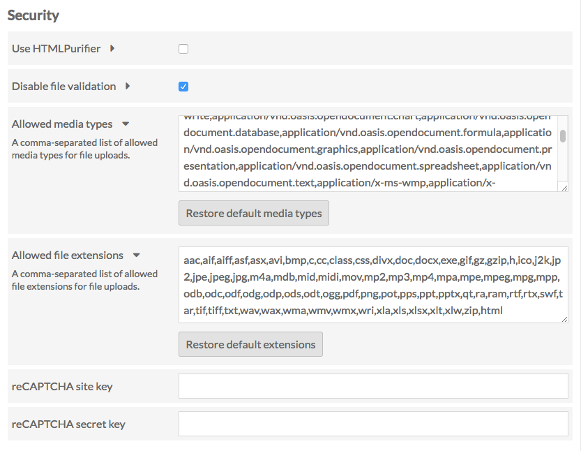

Admin users may change the settings for the admin dashboard and general settings for sites using the Settings tab on the left side of the admin dashboard (gear icon).
Global Settings
Global settings are only available to users with Site Administrator or Global Administrator user roles.
The settings are as follows divided into two sections: General and Security settings.
General

Administrator Email sets the email address for the installation administrator. Note that some hosting setups may require that the domain name for the administrator email match the domain name of the installation (if your domain is yourinstall.org, the administrator email must be user@yourinstall.org).
Installation Title allows you to change the title for the OmekaS installation overall. This is what appears in the upper left-hand corner of the admin dashboard.
Time Zone sets the default time zone for the install, which will be used for error logging messages and to determine creation dates for items, item sets, and other materials on the install. This is a dropdown menu.
Results per page changes the number of results (items, item sets, media) displayed per page when browsing in either public or admin sides of the installation.
Property label information determines what is displayed next to each property when users are editing items and item sets.
- By default, this is set to none, meaning that only the property label is displayed.
- If show vocabulary is selected, the parenthetical statement next to the property name displays the vocabulary used (for example, Dublin Core)
- If show term is selected, the parenthetical statement next to the property name displays the vocabulary:term (for example, dc:title).
Default Site dropdown gives you control over where people land they navigate to the base url of your install. You can either display a list of all sites in the install (default) or select a specific site from the dropdown, to which people will be redirected.
Locale dropdown lets you select from a dropdown of available languages for the Omeka S core to change the language in which your installation's admin side displays.
Enable version notifications check this box to enable notifications for new versions of Omeka S, themes, and modules.
Disable JSON-LD embed By default, Omeka embeds JSON-LD in resource browse and show pages for the purpose of machine-readable metadata discovery. Check this to disable embedding.
Default content visibility to private When this box is checked, all new items, item sets, and sites will have their visibility set to Private. If this box is not checked, the default is public.
Index full-text search Check this box to run an index of your installation's resources and sites as soon as you click Save. You should only need to run this process if you are having issues with search.
Security

- Use HTMLPurifier checkbox. If checked, the service HTMLPurifier will clean up any user-entered HTML.
- Disable file validation: a checkbox, unchecked by default. When unchecked, file uploads are limited by the following two fields. When this box is checked, any type of media or MIME type can be uploaded.
- Allowed media types: The default list contains the most common media types. Only files with media types included in this list may be uploaded to the installation.
- Separate additions to the list with a comma.
- To return to defaults, click the restore default media types button.
- Allowed file extensions: The default list contains common file extensions. Only files with extensions included in this list may be uploaded to the installation.
- Separate additions to the list with a comma.
- To return to defaults, click the restore default extensions button.
The final two fields relate to setting up reCAPTCHA for your site. You will need both a site key and a secret key. Enter them in the corresponding fields after signing up with reCAPTCHA/Google: - reCAPTCHA site key enables to display of the widget on your install's sites. - reCAPTCHA secret key allows communication between your install and reCAPTCHA's server.